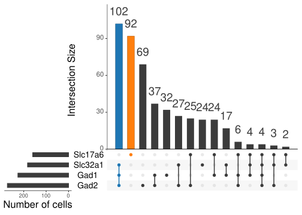
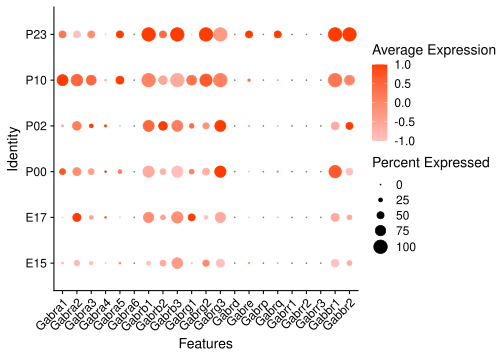
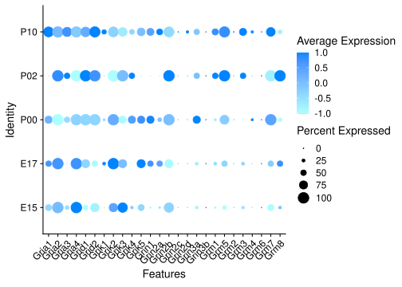
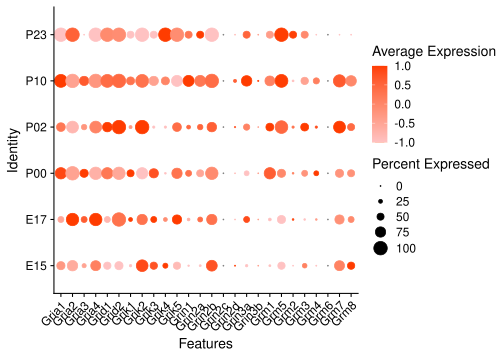
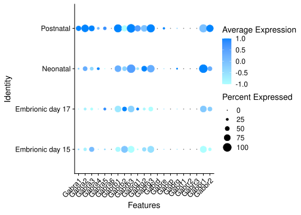
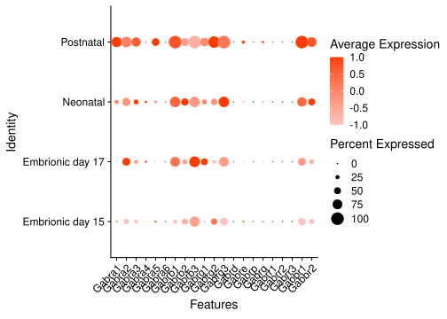
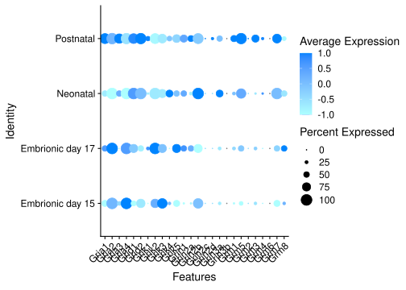
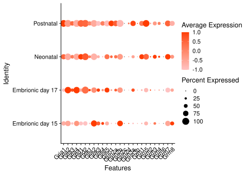

Onecut3 in mouse hypothalamus development
Evgenii Tretiakov
2021-01-28
Last updated: 2022-01-29
Checks: 6 1
Knit directory: Zupancic_2022/
This reproducible R Markdown analysis was created with workflowr (version 1.7.0). The Checks tab describes the reproducibility checks that were applied when the results were created. The Past versions tab lists the development history.
The R Markdown file has unstaged changes. To know which version of the R Markdown file created these results, you’ll want to first commit it to the Git repo. If you’re still working on the analysis, you can ignore this warning. When you’re finished, you can run wflow_publish to commit the R Markdown file and build the HTML.
Great job! The global environment was empty. Objects defined in the global environment can affect the analysis in your R Markdown file in unknown ways. For reproduciblity it’s best to always run the code in an empty environment.
The command set.seed(20220105) was run prior to running the code in the R Markdown file. Setting a seed ensures that any results that rely on randomness, e.g. subsampling or permutations, are reproducible.
Great job! Recording the operating system, R version, and package versions is critical for reproducibility.
Nice! There were no cached chunks for this analysis, so you can be confident that you successfully produced the results during this run.
Great job! Using relative paths to the files within your workflowr project makes it easier to run your code on other machines.
Great! You are using Git for version control. Tracking code development and connecting the code version to the results is critical for reproducibility.
The results in this page were generated with repository version fc91ebf. See the Past versions tab to see a history of the changes made to the R Markdown and HTML files.
Note that you need to be careful to ensure that all relevant files for the analysis have been committed to Git prior to generating the results (you can use wflow_publish or wflow_git_commit). workflowr only checks the R Markdown file, but you know if there are other scripts or data files that it depends on. Below is the status of the Git repository when the results were generated:
Ignored files:
Ignored: data/oldCCA_nae_srt.rds
Ignored: data/rar2020.srt.cont.oc2or3.raw.h5seurat
Ignored: data/rar2020.srt.neuro.raw.h5seurat
Ignored: output/tables/
Unstaged changes:
Modified: analysis/dynamic_oc3-pop.Rmd
Modified: output/figures/stat-corr-plt_oc3-rna-data-Onecut3-Gad1_.pdf
Modified: output/figures/stat-corr-plt_oc3-rna-data-Onecut3-Gad2_.pdf
Modified: output/figures/stat-corr-plt_oc3-rna-data-Onecut3-Nav1_.pdf
Modified: output/figures/stat-corr-plt_oc3-rna-data-Onecut3-Nav2_.pdf
Modified: output/figures/stat-corr-plt_oc3-rna-data-Onecut3-Onecut2_.pdf
Modified: output/figures/stat-corr-plt_oc3-rna-data-Onecut3-Slc17a6_.pdf
Modified: output/figures/stat-corr-plt_oc3-rna-data-Onecut3-Slc32a1_.pdf
Modified: output/figures/stat-corr-plt_oc3-rna-data-Onecut3-Th_.pdf
Modified: output/figures/stat-corr-plt_oc3-rna-data-Onecut3-Trh_.pdf
Modified: output/figures/stat-corr-plt_oc3-rna-data-Onecut3-Trio_.pdf
Modified: output/figures/stat-corr-plt_oc3-rna-data-Slc32a1-Onecut3_.pdf
Modified: output/figures/stat-corr-plt_oc3-rna-data-Slc32a1-Th_.pdf
Modified: output/figures/stat-corr-plt_oc3-rna-data-Slc32a1-Trh_.pdf
Modified: output/figures/stat-corr-plt_oc3-rna-data-Th-Onecut3_.pdf
Modified: output/figures/stat-corr-plt_oc3-rna-data-Th-Trh_.pdf
Note that any generated files, e.g. HTML, png, CSS, etc., are not included in this status report because it is ok for generated content to have uncommitted changes.
These are the previous versions of the repository in which changes were made to the R Markdown (analysis/dynamic_oc3-pop.Rmd) and HTML (docs/dynamic_oc3-pop.html) files. If you’ve configured a remote Git repository (see ?wflow_git_remote), click on the hyperlinks in the table below to view the files as they were in that past version.
| File | Version | Author | Date | Message |
|---|---|---|---|---|
| html | fc91ebf | EugOT | 2022-01-29 | Build site. |
| Rmd | 1df6d48 | EugOT | 2022-01-29 | wflow_publish(“*“) |
| html | d106e47 | EugOT | 2022-01-29 | Build site. |
| Rmd | 6a77e95 | EugOT | 2022-01-29 | wflow_publish(“*“) |
| html | 6a77e95 | EugOT | 2022-01-29 | wflow_publish(“*“) |
# Load tidyverse infrastructure packages
library(here)
# here() starts at /home/etretiakov/src/Zupancic_2022
library(tidyverse)
# ── Attaching packages ─────────────────────────────────────── tidyverse 1.3.1 ──
# ✔ ggplot2 3.3.5 ✔ purrr 0.3.4
# ✔ tibble 3.1.6 ✔ dplyr 1.0.7
# ✔ tidyr 1.1.4 ✔ stringr 1.4.0
# ✔ readr 2.1.1 ✔ forcats 0.5.1
# ── Conflicts ────────────────────────────────────────── tidyverse_conflicts() ──
# ✖ dplyr::filter() masks stats::filter()
# ✖ dplyr::lag() masks stats::lag()
library(magrittr)
#
# Attaching package: 'magrittr'
# The following object is masked from 'package:purrr':
#
# set_names
# The following object is masked from 'package:tidyr':
#
# extract
library(zeallot)
library(future)
#
# Attaching package: 'future'
# The following objects are masked from 'package:zeallot':
#
# %->%, %<-%
# Load packages for scRNA-seq analysis and visualisation
library(sctransform)
library(Seurat)
# Registered S3 method overwritten by 'spatstat.geom':
# method from
# print.boxx cli
# Attaching SeuratObject
library(SeuratWrappers)
library(SeuratDisk)
# Registered S3 method overwritten by 'SeuratDisk':
# method from
# as.sparse.H5Group Seurat
library(UpSetR)
library(patchwork)
library(Nebulosa)src_dir <- here("code")
data_dir <- here("data")
output_dir <- here("output")
plots_dir <- here(output_dir, "figures")
tables_dir <- here(output_dir, "tables")source(here(src_dir, "functions.R"))
source(here(src_dir, "genes.R"))reseed <- 42
set.seed(seed = reseed)# available cores
n_cores <- available_cores(prop2use = .5)
# Parameters for parallel execution
plan("multicore", workers = n_cores)
options(future.globals.maxSize = Inf,
future.rng.onMisuse = "ignore")
plan()
# multicore:
# - args: function (..., envir = parent.frame(), workers = 16)
# - tweaked: TRUE
# - call: plan("multicore", workers = n_cores)Read data
rar2020_ages_all <- c("E15", "E17", "P00", "P02", "P10", "P23")
rar2020_ages_postnat <- c("P02", "P10", "P23")
samples_df <- read_tsv(here("data/samples.tsv"))
# Rows: 8 Columns: 14
# ── Column specification ────────────────────────────────────────────────────────
# Delimiter: "\t"
# chr (8): sample, age, condition, fullname, name, sex, date, date10x
# dbl (6): ncells, libbatch, seqbatch, perfussed, nt, sn
#
# ℹ Use `spec()` to retrieve the full column specification for this data.
# ℹ Specify the column types or set `show_col_types = FALSE` to quiet this message.
colours_wtree <- setNames(read_lines(here(data_dir, "colours_wtree.tsv")),
1:45)
onecut <- LoadH5Seurat(here(data_dir, "rar2020.srt.cont.oc2or3.raw.h5seurat"))
# Validating h5Seurat file
# Initializing RNA with data
# Adding counts for RNA
# Adding scale.data for RNA
# Adding variable feature information for RNA
# Adding reduction pca
# Adding cell embeddings for pca
# Adding feature loadings for pca
# Adding miscellaneous information for pca
# Adding reduction tsne
# Adding cell embeddings for tsne
# Adding miscellaneous information for tsne
# Adding reduction umap
# Adding cell embeddings for umap
# Adding miscellaneous information for umap
# Adding command information
# Adding cell-level metadata
# Adding miscellaneous information
# Adding tool-specific results
onecut3 <- subset(onecut, subset = Onecut3 > 0)Derive and filter matrix of Onecut3
mtx_oc3 <-
onecut3 %>%
GetAssayData("data", "RNA") %>%
as.data.frame() %>%
t()
rownames(mtx_oc3) <- colnames(onecut3)
# Filter features
filt_low_genes <-
colSums(mtx_oc3) %>%
.[. > quantile(., 0.4)] %>%
names()
mtx_oc3 %<>% .[, filt_low_genes]
min_filt_vector <-
mtx_oc3 %>%
as_tibble() %>%
select(all_of(filt_low_genes)) %>%
summarise(across(.fns = ~ quantile(.x, .1))) %>%
as.list %>%
map(as.double) %>%
simplify %>%
.[colnames(mtx_oc3)]
# Prepare table of intersection sets analysis
content_mtx_oc3 <-
(mtx_oc3 > min_filt_vector) %>%
as_tibble() %>%
mutate_all(as.numeric)Correlation analysis visualisation between different genes
p_corrs <- list(
ggstatsplot::ggscatterstats(as.data.frame(mtx_oc3),
x = Onecut3, y = Trh, xfill = "#ffc400", yfill = "#e22ee2"),
ggstatsplot::ggscatterstats(as.data.frame(mtx_oc3),
x = Slc32a1, y = Onecut3, xfill = "#0000da", yfill = "#ffc400"),
ggstatsplot::ggscatterstats(as.data.frame(mtx_oc3),
x = Th, y = Onecut3, xfill = "#006eff", yfill = "#ffc400"),
ggstatsplot::ggscatterstats(as.data.frame(mtx_oc3),
x = Slc32a1, y = Trh, xfill = "#0000da", yfill = "#e22ee2"),
ggstatsplot::ggscatterstats(as.data.frame(mtx_oc3),
x = Th, y = Trh, xfill = "#006eff", yfill = "#e22ee2"),
ggstatsplot::ggscatterstats(as.data.frame(mtx_oc3),
x = Slc32a1, y = Th, xfill = "#0000da", yfill = "#006eff"),
ggstatsplot::ggscatterstats(as.data.frame(mtx_oc3),
y = Slc32a1, x = Onecut3, yfill = "#0000da", xfill = "#ffc400"),
ggstatsplot::ggscatterstats(as.data.frame(mtx_oc3),
y = Th, x = Onecut3, yfill = "#006eff", xfill = "#ffc400"),
ggstatsplot::ggscatterstats(as.data.frame(mtx_oc3),
y = Slc17a6, x = Onecut3, yfill = "#ff0000", xfill = "#ffc400"),
ggstatsplot::ggscatterstats(as.data.frame(mtx_oc3),
y = Gad1, x = Onecut3, yfill = "#a50202", xfill = "#ffc400"),
ggstatsplot::ggscatterstats(as.data.frame(mtx_oc3),
y = Gad2, x = Onecut3, yfill = "#4002a5", xfill = "#ffc400"),
ggstatsplot::ggscatterstats(as.data.frame(mtx_oc3),
y = Onecut2, x = Onecut3, yfill = "#6402a5", xfill = "#ffc400"),
ggstatsplot::ggscatterstats(as.data.frame(mtx_oc3),
y = Nav1, x = Onecut3, yfill = "#2502a5", xfill = "#ffc400"),
ggstatsplot::ggscatterstats(as.data.frame(mtx_oc3),
y = Nav2, x = Onecut3, yfill = "#4002a5", xfill = "#ffc400"),
ggstatsplot::ggscatterstats(as.data.frame(mtx_oc3),
y = Trio, x = Onecut3, yfill = "#2502a5", xfill = "#ffc400")
)
# Registered S3 method overwritten by 'ggside':
# method from
# +.gg ggplot2
n_corrs <- list(
"oc3-rna-data-Onecut3-Trh",
"oc3-rna-data-Slc32a1-Onecut3",
"oc3-rna-data-Th-Onecut3",
"oc3-rna-data-Slc32a1-Trh",
"oc3-rna-data-Th-Trh",
"oc3-rna-data-Slc32a1-Th",
"oc3-rna-data-Onecut3-Slc32a1",
"oc3-rna-data-Onecut3-Th",
"oc3-rna-data-Onecut3-Slc17a6",
"oc3-rna-data-Onecut3-Gad1",
"oc3-rna-data-Onecut3-Gad2",
"oc3-rna-data-Onecut3-Onecut2",
"oc3-rna-data-Onecut3-Nav1",
"oc3-rna-data-Onecut3-Nav2",
"oc3-rna-data-Onecut3-Trio"
)
walk2(n_corrs, p_corrs, save_my_plot, type = "stat-corr-plt")
# `stat_bin()` using `bins = 30`. Pick better value with `binwidth`.
# `stat_bin()` using `bins = 30`. Pick better value with `binwidth`.
# `stat_bin()` using `bins = 30`. Pick better value with `binwidth`.
# `stat_bin()` using `bins = 30`. Pick better value with `binwidth`.
# `stat_bin()` using `bins = 30`. Pick better value with `binwidth`.
# `stat_bin()` using `bins = 30`. Pick better value with `binwidth`.
# `stat_bin()` using `bins = 30`. Pick better value with `binwidth`.
# `stat_bin()` using `bins = 30`. Pick better value with `binwidth`.
# `stat_bin()` using `bins = 30`. Pick better value with `binwidth`.
# `stat_bin()` using `bins = 30`. Pick better value with `binwidth`.
# `stat_bin()` using `bins = 30`. Pick better value with `binwidth`.
# `stat_bin()` using `bins = 30`. Pick better value with `binwidth`.
# `stat_bin()` using `bins = 30`. Pick better value with `binwidth`.
# `stat_bin()` using `bins = 30`. Pick better value with `binwidth`.
# `stat_bin()` using `bins = 30`. Pick better value with `binwidth`.
# `stat_bin()` using `bins = 30`. Pick better value with `binwidth`.
# `stat_bin()` using `bins = 30`. Pick better value with `binwidth`.
# `stat_bin()` using `bins = 30`. Pick better value with `binwidth`.
# `stat_bin()` using `bins = 30`. Pick better value with `binwidth`.
# `stat_bin()` using `bins = 30`. Pick better value with `binwidth`.
# `stat_bin()` using `bins = 30`. Pick better value with `binwidth`.
# `stat_bin()` using `bins = 30`. Pick better value with `binwidth`.
# `stat_bin()` using `bins = 30`. Pick better value with `binwidth`.
# `stat_bin()` using `bins = 30`. Pick better value with `binwidth`.
# `stat_bin()` using `bins = 30`. Pick better value with `binwidth`.
# `stat_bin()` using `bins = 30`. Pick better value with `binwidth`.
# `stat_bin()` using `bins = 30`. Pick better value with `binwidth`.
# `stat_bin()` using `bins = 30`. Pick better value with `binwidth`.
# `stat_bin()` using `bins = 30`. Pick better value with `binwidth`.
# `stat_bin()` using `bins = 30`. Pick better value with `binwidth`.Visualise intersections sets that we are going to use (highlighted)
upset(as.data.frame(content_mtx_oc3),
order.by = "freq",
sets.x.label = "Number of cells",
text.scale = c(2, 1.6, 2, 1.3, 2, 3),
nsets = 15,
sets = c("Gad1", "Gad2", "Slc32a1", "Slc17a6"),
queries = list(
list(
query = intersects,
params = list("Gad1", "Gad2", "Slc32a1"),
active = T
),
list(
query = intersects,
params = list("Slc17a6"),
active = T
)
),
nintersects = 60,
empty.intersections = "on"
)
| Version | Author | Date |
|---|---|---|
| fc91ebf | EugOT | 2022-01-29 |
Regroup factor by stages for more balanced groups
onecut3$age %>% forcats::fct_count()
# # A tibble: 6 × 2
# f n
# <fct> <int>
# 1 E15 156
# 2 E17 104
# 3 P00 77
# 4 P02 74
# 5 P10 174
# 6 P23 7
onecut3$stage <-
onecut3$age %>%
forcats::fct_collapse(`Embrionic day 15` = "E15",
`Embrionic day 17` = "E17",
Neonatal = c("P00", "P02"),
Postnatal = c("P10", "P23"))
onecut3$stage %>% forcats::fct_count()
# # A tibble: 4 × 2
# f n
# <fct> <int>
# 1 Embrionic day 15 156
# 2 Embrionic day 17 104
# 3 Neonatal 151
# 4 Postnatal 181Make subset of stable neurons
onecut3$gaba_status <-
content_mtx_oc3 %>%
select(Gad1, Gad2, Slc32a1) %>%
mutate(gaba = if_all(.fns = ~ .x > 0)) %>%
.$gaba
onecut3$gaba_occurs <-
content_mtx_oc3 %>%
select(Gad1, Gad2, Slc32a1) %>%
mutate(gaba = if_any(.fns = ~ .x > 0)) %>%
.$gaba
onecut3$glut_status <-
content_mtx_oc3 %>%
select(Slc17a6) %>%
mutate(glut = Slc17a6 > 0) %>%
.$glut
oc3_fin <-
subset(onecut3,
cells = union(
WhichCells(onecut3,
expression = gaba_status == TRUE & glut_status == FALSE),
WhichCells(onecut3,
expression = glut_status == TRUE & gaba_occurs == FALSE)))Check contingency tables for neurotransmitter signature
oc3_fin@meta.data %>%
janitor::tabyl(glut_status, gaba_status)
# glut_status FALSE TRUE
# FALSE 0 102
# TRUE 92 0By age
oc3_fin@meta.data %>%
janitor::tabyl(age, gaba_status)
# age FALSE TRUE
# E15 29 9
# E17 12 4
# P00 12 6
# P02 16 2
# P10 21 81
# P23 2 0By stage
oc3_fin@meta.data %>%
janitor::tabyl(stage, gaba_status)
# stage FALSE TRUE
# Embrionic day 15 29 9
# Embrionic day 17 12 4
# Neonatal 28 8
# Postnatal 23 81Make splits of neurons by neurotransmitter signature
oc3_fin$status <- oc3_fin$gaba_status %>%
if_else(true = "GABAergic",
false = "glutamatergic")
Idents(oc3_fin) <- "status"
SaveH5Seurat(
object = oc3_fin,
filename = here(data_dir, "oc3_fin"),
overwrite = TRUE,
verbose = TRUE
)
# Creating h5Seurat file for version 3.1.5.9900
# Adding counts for RNA
# Adding data for RNA
# Adding scale.data for RNA
# Adding variable features for RNA
# No feature-level metadata found for RNA
# Adding cell embeddings for pca
# Adding loadings for pca
# No projected loadings for pca
# Adding standard deviations for pca
# No JackStraw data for pca
# Adding cell embeddings for tsne
# No loadings for tsne
# No projected loadings for tsne
# No standard deviations for tsne
# No JackStraw data for tsne
# Adding cell embeddings for umap
# No loadings for umap
# No projected loadings for umap
# No standard deviations for umap
# No JackStraw data for umap
## Split on basis of neurotrans and test for difference
oc3_fin_neurotrans <- SplitObject(oc3_fin, split.by = "status")
## Split on basis of age and test for difference
oc3_fin_ages <- SplitObject(oc3_fin, split.by = "age")DotPlots grouped by age
Expression of GABA receptors in GABAergic Onecut3 positive cells
DotPlot(object = oc3_fin_neurotrans$GABAergic,
features = gabar,
group.by = "age",
cols = c("#adffff", "#0084ff"),
col.min = -1, col.max = 1
) + RotatedAxis()
| Version | Author | Date |
|---|---|---|
| fc91ebf | EugOT | 2022-01-29 |
Expression of GABA receptors in glutamatergic Onecut3 positive cells
DotPlot(object = oc3_fin_neurotrans$glutamatergic,
features = gabar,
group.by = "age",
cols = c("#ffc2c2", "#ff3c00"),
col.min = -1, col.max = 1
) + RotatedAxis()
| Version | Author | Date |
|---|---|---|
| fc91ebf | EugOT | 2022-01-29 |
Expression of glutamate receptors in GABAergic Onecut3 positive cells
DotPlot(object = oc3_fin_neurotrans$GABAergic,
features = glutr,
group.by = "age",
cols = c("#adffff", "#0084ff"),
col.min = -1, col.max = 1
) + RotatedAxis()
| Version | Author | Date |
|---|---|---|
| fc91ebf | EugOT | 2022-01-29 |
Expression of glutamate receptors in glutamatergic Onecut3 positive cells
DotPlot(object = oc3_fin_neurotrans$glutamatergic,
features = glutr,
group.by = "age",
cols = c("#ffc2c2", "#ff3c00"),
col.min = -1, col.max = 1
) + RotatedAxis()
| Version | Author | Date |
|---|---|---|
| fc91ebf | EugOT | 2022-01-29 |
DotPlots grouped by stage
Expression of GABA receptors in GABAergic Onecut3 positive cells
DotPlot(object = oc3_fin_neurotrans$GABAergic,
features = gabar,
group.by = "stage",
cols = c("#adffff", "#0084ff"),
col.min = -1, col.max = 1
) + RotatedAxis()
| Version | Author | Date |
|---|---|---|
| fc91ebf | EugOT | 2022-01-29 |
Expression of GABA receptors in glutamatergic Onecut3 positive cells
DotPlot(object = oc3_fin_neurotrans$glutamatergic,
features = gabar,
group.by = "stage",
cols = c("#ffc2c2", "#ff3c00"),
col.min = -1, col.max = 1
) + RotatedAxis()
| Version | Author | Date |
|---|---|---|
| fc91ebf | EugOT | 2022-01-29 |
Expression of glutamate receptors in GABAergic Onecut3 positive cells
DotPlot(object = oc3_fin_neurotrans$GABAergic,
features = glutr,
group.by = "stage",
cols = c("#adffff", "#0084ff"),
col.min = -1, col.max = 1
) + RotatedAxis()
| Version | Author | Date |
|---|---|---|
| fc91ebf | EugOT | 2022-01-29 |
Expression of glutamate receptors in glutamatergic Onecut3 positive cells
DotPlot(object = oc3_fin_neurotrans$glutamatergic,
features = glutr,
group.by = "stage",
cols = c("#ffc2c2", "#ff3c00"),
col.min = -1, col.max = 1
) + RotatedAxis()
| Version | Author | Date |
|---|---|---|
| fc91ebf | EugOT | 2022-01-29 |
sessionInfo()
# R version 4.1.2 (2021-11-01)
# Platform: x86_64-redhat-linux-gnu (64-bit)
# Running under: Rocky Linux 8.5 (Green Obsidian)
#
# Matrix products: default
# BLAS/LAPACK: /usr/lib64/libopenblas-r0.3.12.so
#
# locale:
# [1] LC_CTYPE=C.UTF-8 LC_NUMERIC=C
# [3] LC_TIME=en_US.UTF-8 LC_COLLATE=en_US.UTF-8
# [5] LC_MONETARY=en_US.UTF-8 LC_MESSAGES=en_US.UTF-8
# [7] LC_PAPER=en_US.UTF-8 LC_NAME=C
# [9] LC_ADDRESS=C LC_TELEPHONE=C
# [11] LC_MEASUREMENT=en_US.UTF-8 LC_IDENTIFICATION=C
#
# attached base packages:
# [1] stats graphics grDevices utils datasets methods base
#
# other attached packages:
# [1] Nebulosa_1.4.0 patchwork_1.1.1 UpSetR_1.4.0
# [4] SeuratDisk_0.0.0.9019 SeuratWrappers_0.3.0 SeuratObject_4.0.4
# [7] Seurat_4.0.6 sctransform_0.3.2 future_1.23.0
# [10] zeallot_0.1.0 magrittr_2.0.1 forcats_0.5.1
# [13] stringr_1.4.0 dplyr_1.0.7 purrr_0.3.4
# [16] readr_2.1.1 tidyr_1.1.4 tibble_3.1.6
# [19] ggplot2_3.3.5 tidyverse_1.3.1 here_1.0.1
# [22] workflowr_1.7.0
#
# loaded via a namespace (and not attached):
# [1] scattermore_0.7 R.methodsS3_1.8.1
# [3] coda_0.19-4 ragg_1.2.1
# [5] bit64_4.0.5 knitr_1.37
# [7] irlba_2.3.5 DelayedArray_0.20.0
# [9] R.utils_2.11.0 data.table_1.14.2
# [11] rpart_4.1-15 RCurl_1.98-1.5
# [13] generics_0.1.1 BiocGenerics_0.40.0
# [15] callr_3.7.0 cowplot_1.1.1
# [17] RANN_2.6.1 correlation_0.7.1
# [19] bit_4.0.4 tzdb_0.2.0
# [21] spatstat.data_2.1-2 xml2_1.3.3
# [23] lubridate_1.8.0 httpuv_1.6.5
# [25] SummarizedExperiment_1.24.0 assertthat_0.2.1
# [27] WRS2_1.1-3 xfun_0.29
# [29] hms_1.1.1 jquerylib_0.1.4
# [31] evaluate_0.14 promises_1.2.0.1
# [33] fansi_1.0.0 dbplyr_2.1.1
# [35] readxl_1.3.1 igraph_1.2.11
# [37] DBI_1.1.2 htmlwidgets_1.5.4
# [39] reshape_0.8.8 spatstat.geom_2.3-1
# [41] kSamples_1.2-9 stats4_4.1.2
# [43] Rmpfr_0.8-7 paletteer_1.4.0
# [45] ellipsis_0.3.2 ks_1.13.3
# [47] backports_1.4.1 insight_0.15.0
# [49] deldir_1.0-6 MatrixGenerics_1.6.0
# [51] vctrs_0.3.8 SingleCellExperiment_1.16.0
# [53] Biobase_2.54.0 remotes_2.4.2
# [55] ROCR_1.0-11 abind_1.4-5
# [57] cachem_1.0.6 withr_2.4.3
# [59] vroom_1.5.7 mclust_5.4.9
# [61] goftest_1.2-3 cluster_2.1.2
# [63] lazyeval_0.2.2 crayon_1.4.2
# [65] hdf5r_1.3.5 labeling_0.4.2
# [67] pkgconfig_2.0.3 SuppDists_1.1-9.7
# [69] GenomeInfoDb_1.30.0 nlme_3.1-153
# [71] statsExpressions_1.2.0 rlang_0.4.12
# [73] globals_0.14.0 lifecycle_1.0.1
# [75] miniUI_0.1.1.1 MatrixModels_0.5-0
# [77] modelr_0.1.8 rsvd_1.0.5
# [79] cellranger_1.1.0 rprojroot_2.0.2
# [81] polyclip_1.10-0 matrixStats_0.61.0
# [83] lmtest_0.9-39 datawizard_0.2.2
# [85] Matrix_1.3-4 mc2d_0.1-21
# [87] zoo_1.8-9 reprex_2.0.1
# [89] whisker_0.4 ggridges_0.5.3
# [91] processx_3.5.2 png_0.1-7
# [93] viridisLite_0.4.0 PMCMRplus_1.9.3
# [95] parameters_0.16.0 bitops_1.0-7
# [97] getPass_0.2-2 R.oo_1.24.0
# [99] KernSmooth_2.23-20 multcompView_0.1-8
# [101] parallelly_1.30.0 S4Vectors_0.32.3
# [103] scales_1.1.1 memoise_2.0.1
# [105] plyr_1.8.6 ica_1.0-2
# [107] zlibbioc_1.40.0 compiler_4.1.2
# [109] RColorBrewer_1.1-2 fitdistrplus_1.1-6
# [111] snakecase_0.11.0 cli_3.1.0
# [113] XVector_0.34.0 listenv_0.8.0
# [115] pbapply_1.5-0 ps_1.6.0
# [117] ggside_0.2.0 MASS_7.3-54
# [119] mgcv_1.8-38 tidyselect_1.1.1
# [121] stringi_1.7.6 textshaping_0.3.6
# [123] highr_0.9 yaml_2.2.1
# [125] ggrepel_0.9.1 grid_4.1.2
# [127] sass_0.4.0 tools_4.1.2
# [129] future.apply_1.8.1 parallel_4.1.2
# [131] rstudioapi_0.13 git2r_0.29.0
# [133] janitor_2.1.0 gridExtra_2.3
# [135] farver_2.1.0 Rtsne_0.15
# [137] digest_0.6.29 BiocManager_1.30.16
# [139] shiny_1.7.1 pracma_2.3.6
# [141] BWStest_0.2.2 Rcpp_1.0.8
# [143] GenomicRanges_1.46.1 broom_0.7.11
# [145] BayesFactor_0.9.12-4.3 performance_0.8.0
# [147] later_1.3.0 RcppAnnoy_0.0.19
# [149] httr_1.4.2 effectsize_0.5
# [151] colorspace_2.0-2 rvest_1.0.2
# [153] fs_1.5.2 tensor_1.5
# [155] reticulate_1.22 IRanges_2.28.0
# [157] splines_4.1.2 uwot_0.1.11
# [159] rematch2_2.1.2 spatstat.utils_2.3-0
# [161] systemfonts_1.0.3 plotly_4.10.0
# [163] xtable_1.8-4 gmp_0.6-2.1
# [165] jsonlite_1.7.3 R6_2.5.1
# [167] pillar_1.6.4 htmltools_0.5.2
# [169] mime_0.12 glue_1.6.0
# [171] fastmap_1.1.0 codetools_0.2-18
# [173] mvtnorm_1.1-3 utf8_1.2.2
# [175] lattice_0.20-45 bslib_0.3.1
# [177] spatstat.sparse_2.1-0 leiden_0.3.9
# [179] gtools_3.9.2 survival_3.2-13
# [181] rmarkdown_2.11 munsell_0.5.0
# [183] GenomeInfoDbData_1.2.7 ggstatsplot_0.9.0
# [185] haven_2.4.3 reshape2_1.4.4
# [187] gtable_0.3.0 bayestestR_0.11.5
# [189] spatstat.core_2.3-2